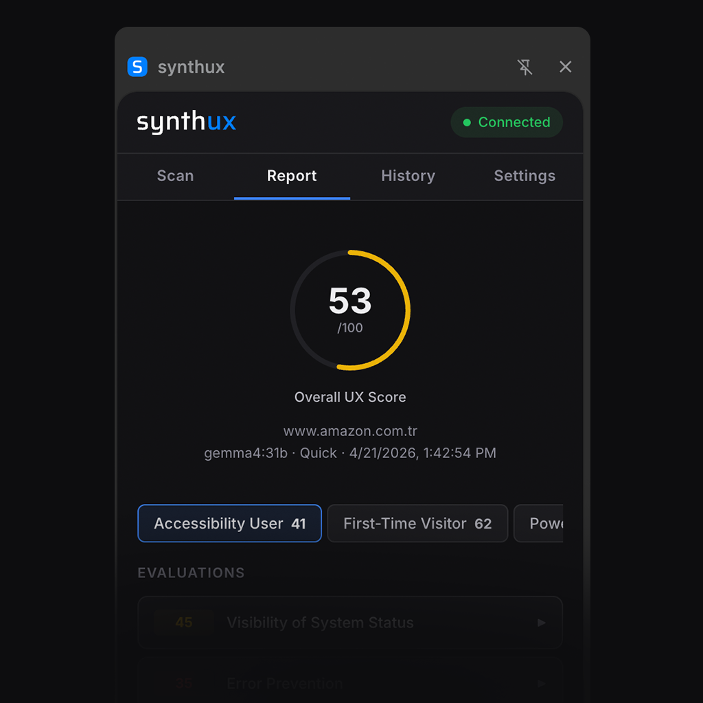

Open source Chrome extension that evaluates web pages using synthetic user profiles and Nielsen's 10 Usability Heuristics — powered by local AI.
Everything you need for comprehensive UX evaluation.
Runs entirely on your machine via Ollama or LM Studio. No API costs, no cloud dependency.
Industry-standard UX evaluation framework used by professionals for 30+ years.
Evaluate from 3 perspectives: First-Time Visitor, Power User, Accessibility User.
Automated WCAG checks for contrast, alt text, heading structure, and more.
0-100 scores per heuristic with actionable recommendations.
No telemetry, no analytics, no data collection. Your pages stay on your machine.
Get started in under 5 minutes.
Download Ollama or LM Studio and pull a model like Gemma, Qwen, or Llama.
Open the side panel, select profiles, and hit Analyze.
Ollama users: run launchctl setenv OLLAMA_ORIGINS "*" (macOS) or export OLLAMA_ORIGINS="*" (Linux) then restart Ollama.
See the full setup guide for Windows and LM Studio instructions.
A clean, professional interface in your browser's side panel.

Built with a privacy-first architecture. No exceptions.
All analysis runs locally — no data sent to external servers
No telemetry, no analytics, no tracking in the extension
Automated security scanning with Dependabot & CodeQL
Open source — inspect every line of code yourself
Built in the open. Contributions welcome.
synthux is MIT licensed. Fork it, extend it, make it yours.